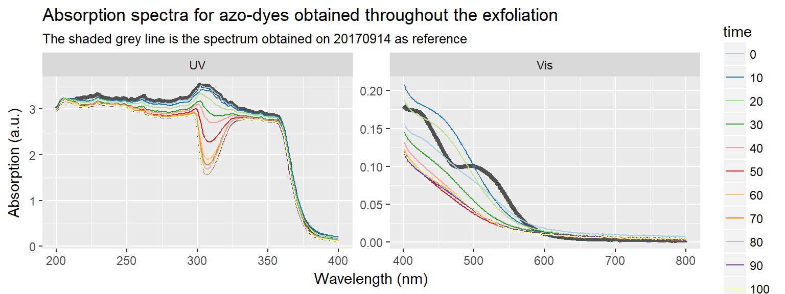

20170929 Gr-NH2 production with monitoring diazonium concentration
Following the partially succesful graphene production for Radisurf we wish to make a new production in the same way. However, this time the diazonium concentration will be monitored using UV-Vis spectroscopy (see 20170915) and the graphene will be freeze-dried in smaller batches to ensure that a fine powder is obtained.
Protocol
library(tidyverse)
library(units)
V = set_units(1500, mL) # Volume of 0.1 M H2SO4 to be used
C_diazo = set_units(2, mmol/L)
C_naphtol = set_units(3, mmol/L)
V_naphtol = set_units(30, mL)
M_nitro = set_units(202.64, mg/mmol) # 4-Nitrophenethylamine hydrochloride
M_nitrite = set_units(69.00, mg/mmol) # NaNO2
M_naphtol = set_units(144.17, mg/mmol) # 2-Naphtol
n_nitro = V * C_diazo
n_nitrite = n_nitro * 2
n_naphtol = V_naphtol * C_naphtol # enough to make 15 samples of 2 mL
m_nitro = n_nitro * M_nitro
m_nitrite = n_nitrite * M_nitrite
m_naphtol = n_naphtol * M_naphtol
C_dye = set_units(C_diazo * set_units(2, mL) / set_units(4, mL), mmol/L)Preparing solutions
First 1 L 1.0 M H2SO4 is made by mixing 55 mL conc. H2SO4 with 962 mL H2O. From this 150 mL is diluted to 1500 mL to produce a 0.1 M H2SO4.
The 2 mmol/L 4-(2-aminoethyl)benzenediazonium solution is generated in-situ by mixing 1500 mL 0.1 M H2SO4 with 607.92 mg 4-Nitrophenethylamine hydrochloride (3 mmol) and 414 mg NaNO2 (6 mmol). This is stirred for 15 min.
A 3 mmol/L solution of 2-Naphtol is made by dissolving 12.9753 mg mg 2-Naphtol in 6 mL 10 % NaOH and 24 mL H2O.
Samples for UV-Vis can then be made easily by mixing 2 mL 3 mmol/L 2-Naphtol solution with 2 mL 2 mmol/L diazonium-solution to obtain a solution of the azo-dye (max conc. obtained is 1 mmol/L).
Gr-NH2 exfoliation
The electrochemical exfoliation of functionalised graphene will be done by positioning and 8x15 cm2 graphite foil between two large stainless steel electrodes and applying 10 V for 1 hour or more. Weigh the foil before electrolysis.
2 mL samples will be extracted with a syringe and put into the 2-Naphtol solution through a filter (to remove any graphite) every 10 minutes. At these points the temperature should also be noted.
The exfoliated graphene and remaining graphite foil is collected and washed with water and acetonitrile. The graphene is ultrasonicated in DMF and left overnight for graphite to sediment.
The upper 95 % of the solution is collected and centrifuged to collect most of the graphene. It is then ultrasonicated in water and freeze-dried.
Journal
data170929 <- read_csv('data/raw_data/electrochemistry/20170929_Gr-NH2_exfoliation.csv')
path <- "data/raw_data/uvvis/170929 Gr-NH2 production/"
specs170929 <- tibble(files = list.files(path = path, pattern = "*.csv")) %>%
mutate(time = stringr::str_extract(files, "^[:digit:]*") %>% as.numeric()) %>%
mutate(data = map(paste0(path, files), read_delim, delim = ";", skip = 1)) %>%
left_join(data170929, by = "time") %>%
unnest() %>%
mutate(region = ifelse(nm > 400, "Vis", "UV"))
refspec <- read_delim('data/raw_data/uvvis/20170915 Azodye/Azo-dye 1-0.csv', delim = ";", skip = 1) %>%
mutate(region = ifelse(nm > 400, "Vis", "UV"))
specs170929 %>%
mutate(time = as.factor(time)) %>%
ggplot() +
geom_line(data = refspec, aes(nm, A), size = 1.5, alpha = 0.66) +
geom_line(aes(nm, A, color = time)) +
scale_color_brewer(palette = "Paired") +
facet_wrap(~region, scales = "free") +
labs(x = "Wavelength (nm)", y = "Absorption (a.u.)", title = "Absorption spectra for azo-dyes obtained throughout the exfoliation", subtitle = "The shaded grey line is the spectrum obtained on 20170914 as reference")
g1 <- specs170929 %>%
filter(nm == 499) %>%
ggplot(aes(time, A)) +
geom_point() +
theme(axis.text.x = element_blank(), axis.title.x = element_blank(), axis.ticks.x = element_blank()) +
labs(y = "Absorption at 499 nm (a.u.)")
g2 <- specs170929 %>%
filter(nm == 499) %>%
ggplot(aes(time, temp)) +
geom_line() +
labs(x = "Time (min)", y = "Temperature (°C)")
cowplot::plot_grid(g1, g2, ncol = 1, align = "v", rel_heights = c(1,1.1))
The unexfoliated graphite weighed 1.34 g, meaning that a total of 5.74 g was exfoliated. The exfoliated product was washed with water, acetonitrile and water, before being ultrasonicated in 575 mL DMF (ca. 1 g/100 mL) for 45 minutes and left to settle overnight.
100 mL batches of this solution was attempted freeze-dried in several ways:
- With and without aluminum foil used as cover after freezing in LiN
- Spinning the bottle while freezing to create a larger surface area
- Keeping the flask in a -20 °C bath while freezedrying.
All attempts were failures, as the liquid water either quickly melted, or did not properly sublimate in a decent time.
A small amount of graphene solution was filtered on 0.45 μm nylon membrane, and the pH of the water measured to approx. 3.90. An acidic aqueous solution might have a lower freezing-point, which could cause problems with the freeze-drying process. Since the samples have been ultrasonicated, a furhter washing procedure is difficult at this step. For this reason a new batch will be produced instead.
Conclusion and outlook
The production of graphene appeared succesful. It was difficult to monitor the diazonium-concentration using the absorption method, since a spectrum with different peaks was obtained. It might be possible to resolve this by keeping the samples in dark after injecting the diazonium solution, and remembering to gently heat the samples to facilitate reaction, after mixing the 2-Naphtol and the diazonium salt.
The freeze-drying procedure is causing problems on this scale, but it might be due to an insufficient washing-procedure. Next time the entire product will be suspended in clean water several times and the pH of the washing water tested to ensure a neutral solution. It will probably also be necessary to measure the pH after ultrasonication in water, to ensure that acid is not released from between the graphene layers.
To summarise the steps that need to be different in the next production run:
- Careful treatment of the extracted samples for absorption. Heat them gently (which temperature?) for a few minutes and keep in dark until measuring absorbance.
- Extensive washing of the graphene. Previously more water was just run through the filtration setup, but this time the exfoliate should probably be suspended in clean water and refiltered several times. Measure the pH of the filtrate.
- Freeze-drying (how large batches can be made?) - use a rotation-evaporator for the freezing procedure to freeze as a ‘shell’ and experiment with insulating the flask using paper and aluminum foil.